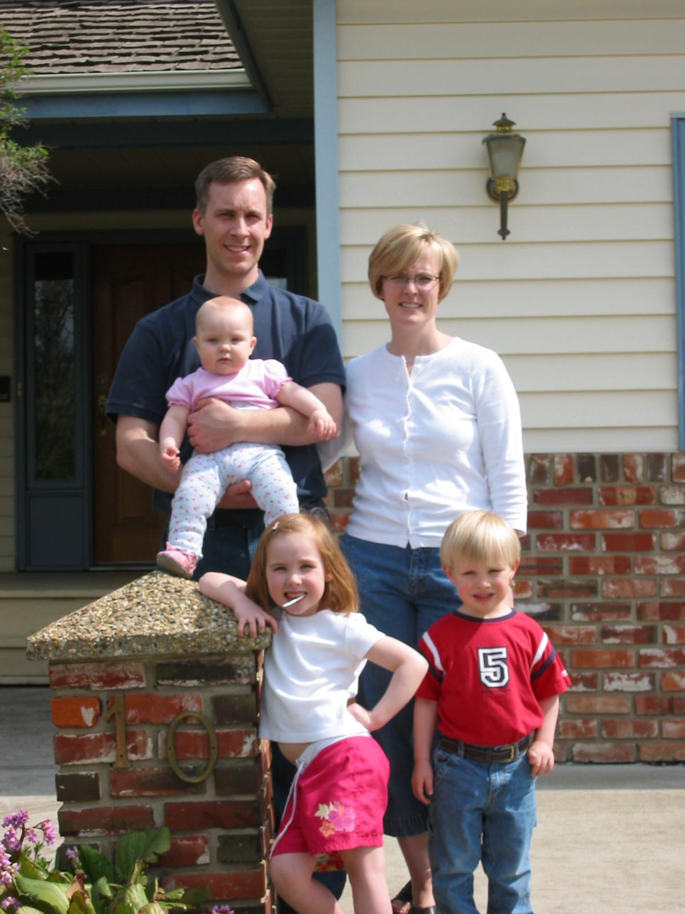

My Website
The Offenbergers' Oh-So-Basic Website
|

|
Family Photo Site
SmugMug site
(opens in new browser tab)
To access, you need our password. Text or email Gary for it.
|
Gary’s Cancer Journey (all the emails in one place)
Click on the arrows at left of each update name to show the email text
September 4, 2024: Found out I had cancer via MRI report of lower lumbar (no related email)
been on phone with Dr. Tieu (good ol' Marty, as Katy calls him) this morning
- it may be that I have what's called CUP - unknown primary cancer (not to be confused with UCP), but they dunno...but I've since learned that that isn't a diagnosis...they just call it that till they know
- since the cross cancer won't accept you till they have a tissue saying you have cancer, they need to keep looking for a place to biopsy
- they were thinking that primary cancer would some soft tissue (lung, prostate, etc.) that would be easier to biopsy than bone, but looking unlikely
- so...now my doc is conferring with cross cancer triage and oncology radiologists to figure out next step which is likely a CT guided biopsy of my bones; a biopsy there will tell them the primary
September 13, 2024: Update 1 | The first bits of info
September 13, 2024: Update 2 | More details after CT Scan
Easiest to just drop all my notes in an email rather than communicating with you all separately. ♥️♥️ (of course, if you want to ask me things separately, go for it; happy to answer)
and you don't have to read all this! I just don't want to edit it for certain people based on what I assume that they want to know :)
____
Conversation with Tieu 11 am Sept 13 after CT scan
- Dr. Tieu spoke with interventional radiologist
- need to do bone biopsy
- probably one of the two - bigger one on lower spine (L5) or one on the hip bone
- most accessible one and the one they're most likely to get a good sample from is the one they’d go for...hip preferable as it's safer but if it won't give a good sample, not worth doing
- he’s put in the req as urgent
- usually within two weeks
- the phone call I’ll get will tell me when — and that phone call will be Mon or Tues most likely
- asked his radiologist friend - are private biopsies a thing? Not in Canada
- what about a PET scan?
- (positron emission tomography (PET) scan is an imaging test that can help reveal the metabolic or biochemical function of your tissues and organs. The PET scan uses a radioactive drug called a tracer to show both typical and atypical metabolic activity)
- he’s going to put requisition in
- will likely not be for another couple months or more
- even an inpatient (someone at the Cross Cancer) priority one that his friend put in yesterday was not scheduled till November
- urgent one will likely not change anything…the tissue diagnosis will guide it …even if I had a PET today, would still need biopsy
- but he will put in req - so we have a baseline for 6 to 9 months from now
- private?
- what would it change in short term? probably nothing
- oncology team will want one but more for the baseline
- MIC is starting them up - he can send me req for that…but they’re ramping up so October is likely the soonest they can do it
- if it was him, he’d likely book it especially given how crazy the cancer system is right now, so at least when meet with oncologist the first time it’s already done
- so I asked for req and will set this up
- still waiting for CUP (unknown primary cancer) team to call him
- he wants to know if they can do this faster; gut says no but he’ll ask anyway to exhaust options
- he’ll call me before EOD regardless
Questions that Katy and I generated that he answered on phone
- Katy's research says that most spinal tumors are benign....so is the reason that you are 90%+ sure it's cancer (100% after a biopsy) is that I also have lesions on my "skeleton" , not just the spinal tumor?
- part of it is the number...if it was a single sclerotic lesion, lower suspicion of cancer, but because it's in multiple places in the spine and hip bone, not many things would do that besides cancer
- I had a full colon (not sure why they wouldn't have had me clean it out so they'd have a good view since colon cancer is common) so why not order a colonoscopy? I'm due for one anyway in February and maybe I could get it quickly given the circumstances
- screening for CT is colonoscopy gold standard - feb 2020 so due in feb 2025
- CT colonography is different than CT I had and usually reserved for people who can't tolerate colonoscopy
- ...and to Katy's point...by and large it's true that there would be weight loss and other symptoms if it started there and spread to bones
- suspicion of colon cancer as primary is low given that
- I had colonoscopy 5 years ago and 4 sigmoidoscopies annual after that
- also, a CT would show a big mass anyway
- and from practical perspective, we need tissue biopsy...and the only place we're confident now is from bone...so hate to go through colonoscopy to find a tiny polyp
- the CT said I have it in my "skeleton"...so does that mean in lots of my bones everywhere? so why not try a bone that showed a lesion that isn't my spine, that's less risky, like my ribs, to biopsy?
- yes that's exactly what they're going to try to do which is why hip is mentioned; but it's a balance...want accessible and safe but also big enough so they'll definitely get a sample
- Was the MRI able to determine some characteristics of the lesions? Seems from research that most kinds of bone cancers can be differentiated on an MRI. I'll need a biopsy regardless but going off the info we have, could we learn more?
- a primary bone cancer, yes, can look at them
- but this is very unlikely to be primary in the bones
- a primary would have fewer lesions; the fact they found so many suggests it came from somewhere else, got into blood and went lots of places in bone
September 14, 2024: Update 3 | Schedule of more diagnostic tests
Summary
I'm waiting for a bone biopsy and a head & neck CT, hopefully both next week. Have plans for a fun weekend!
Details
- ALREADY SHARED: rush bone biopsy has been ordered; hope to get it next week
- NEW: rush CT on head and neck just to be complete though very unlikely anything there
- NEW: rush PET CT ordered, but they take forever nowadays and really it's just for a baseline so that they can see my improvement over time so not a panic
- NEW: doc also sent a referral to the Cross Cancer; they'll likely reject it as I haven't done a biopsy yet and they're apparently sticklers for that, but he wants it on their radar
In the meantime, we're going to have a fun weekend! Drive the Miata while it's still snow-free, maybe Elk Island to hike on Sunday (sunny forecast), go walkies with Nora, watch some fun shows, watch the F1 race :). And spent lots of time listening to bangers and with loved ones and friends. ♥️
Gary
P.S. updates won't be daily - it was just busy the last few days with a key CT; not to worry
September 17, 2024: Update 4 | CT-guided biopsy scheduled
Pleased to share that my CT-guided bone biopsy is scheduled for next week, Wednesday September 25. Now we're getting somewhere.
No word on the head/neck CT but it's not crucial.
September 18, 2024: Update 5 | Two more tests scheduled
Ok, so I'm using up my credits of public healthcare dollars within a few-week span, here. Keep paying your taxes, all, especially you Albertans.
Anyway, I got word yesterday/today that I have two more tests scheduled:
- PET CT scan for this Friday (20th)
- The PET can show the primary source of cancer, but only if there is a high amount of metabolic activity in that particular place. Some primary sources can hide from PET.
- Regardless of what this scan says, I must have a biopsy for me to get hooked up with an oncologist at the Cross (Cross Cancer Institute). Put differently, without a biopsy, I don't get into the Cross.
- Katy: "You need all the specific pathology and genetics to know how to properly treat the cancer and confirm the primary site, because while statistically it’s unlikely for the spine to be the primary site, it’s not impossible, and would really change how the cancer will respond to certain treatments. A biopsy is the standard for diagnosis. And beyond that, a benign tumor can show up on a PET if its metabolic rate is fast enough."
- Also recall that my doctor, Dr. Tieu ("Marty" to Katy) said that the PET is mainly a baseline so that we can identify later how my cancer is shrinking. But still, it’s another test to identify where cancer is floating around.
- By the way, Katy can't believe I got in; it's normally a two-month wait. All the prayers and positive vibes are working.
- Head/neck CT for November 12
- I'm on the cancellation list to get in sooner if possible
- But I'm not bent out of shape about waiting for this, and will likely be able to cancel it, as we should know well before then what's going on
- Note: Islanders are in town to play the Oilers that night (thanks Google built-in calendars for sports teams)
September 20, 2024: Update 6 | PET Scan results
Happy Friday everyone!
Had a PET scan this morning at 9:30 am and got the results by 4 pm. Pretty quick, I think.
Nothing new: cancer in my bones but still no cancer showing up anywhere else. Well, at least, no unusually high metabolic activity anywhere else.
Still befuddled after two blood tests, one x-ray, one ultrasound, one CT, and one PET; we remain in no-man's land.
The bone biopsy (likely in my lower back, where those little dimples are that we all have/had) is Wednesday.
I'm told not to expect results until the following week, as it requires a complicated assessment at a central lab.
Patience is a virtue, right?
September 25, 2024: Update 7 | Brief update after biopsy
TLDR; Had the biopsy this morning. All went well. Results hopefully by early next week.
Detail:
They did a mass biopsy (i.e., of the tumor on my lowest lumbar vertebrae: L5), not a bone biopsy. Dr. Kumar got 5 good samples of about 2 cm x 4 mm, including one that was right on the bone, so lots for the pathologists to play with.
If this doesn't show anything useful, they still have two other things they can try. We'll get there, just a matter of time.
Was local anaesthetic plus a wee bit o' pain killer, but I was conscious throughout. At home now (Dad took me; Katy brought me home after the three hours). No pain I don't normally have.
Gary
P.S. I broke half a tooth off yesterday while eating almonds - beware if you like them! - so now I have a dentist appointment tomorrow afternoon. Want me to update you on that too? Maybe I'll start a different thread. A-hahahaha.
September 27, 2024: Update 8 | Initial details on cancer type from Cross
TLDR; see the words in bold
Details:
Me: I got some good news today: the preliminary biopsy results confirm cancer.
You: What? That's not good news!
Me: No, it's not, but we already knew it was 99% probable.
You: So what's the good news?
Me: Well, it's a G1 or G2, not a G3.
You: What the heck is that?
Me: It's low-grade or intermediate grade, not high-grade (aggressive).
You: Ok, that sounds good, but let's stop this game and tell me efficiently. I've got things to do.
Me: Fair enough. Let's do the W's.
- Who told you?
- A triage nurse at the Cross called me.
- My family doc called about 10 minutes later.
- (They don't release biopsy results via MyAHSConnect like other tests; good thing too.)
- What type of cancer is it?
- Neuroendocrine cancer
- [for those of you who don't know (I didn't), neuroendocrine cells have characteristics of both nerve cells and hormone-producing endocrine cells and help regulate various bodily functions by releasing hormones in response to signals from the nervous system]
- Why is it in lots of your bones (spine, hip, shoulder, etc.)?
- They still don't know where it started which will help them figure that out.
- Katy and I have our theories, but likely we'll talk to the oncologist next week and get into that.
- What will they do about it?
- Next week, I'll start radiation treatment focused on the tumor at the base of my spine that is causing the nerve pain.
- Haven't got a specific appointment yet.
- Next treatment is TBD, but Katy and my family doc are guessing chemo.
- Who will I meet with?
- Initially, I'm guessing a medical oncologist because until they find the primary cancer, it is what the Cross calls a PRUNK (primary unknown) and what the rest of the world calls CUP (Cancer of Unknown Primary), and a medical onc diagnoses cancer and works with other oncologists (like radiation oncs) and pathologists to get to the bottom* of it.
- When will you meet with an oncologist?
- TBD but likely next week; I'm guessing before the radiation starts
Bottom line: We're pleased (doc, nurse, my immediate family) that it's not aggressive and that we have one foot out of no-man's (uncertainty) land. The other foot is in the air and will step down in we-have-a-plan land next week.
It was great to hear today because this is our 29th anniversary weekend (Monday being Sept 30, we'll celebrate this fin de semaine). Tomorrow we'll spend the day together and tomorrow night, we'll go to The Marc (opens in new browser tab). I might even break my no-alcohol rule and have a glass of red wine. I mean, you've got to celebrate good times, c'mon!
Hope you all have a good weekend in store too and thanks again for all of the support. I can feel it in my bones, (brutal) pun intended.
Love,
Gary
October 2, 2024: Update 9 | Consultation with Radiation Oncologist
This morning, I had a consultation with a radiation oncologist to discuss the short-term plan to relieve my pain.
After that, I had a CT to map where they'll hit me. They put four permanent freckle tattoos to line me up the same way each time.*
I’ll have five radiation treatments starting tomorrow and ending next Wednesday (no workie on weekends).
________
Random other detail
The only side effects are possible pain flares – but those should be moderated by the steroid I start to take tomorrow for the next seven days – and perhaps fatigue.
The radiologist doctor has spoken with the medical oncologists and she said they are fighting over me (grin): they don't know if I should go to a gastro onc or a neuroendocrine onc. (In 2015 when I had a colonoscopy, they found a neuroendocrine tumor on one a polyp they removed but annual check ups after that for the next five years showed no recurrence. That said, it could be where this all started thus the gastro onc possibility. )
She also suspects that it will be a month at least before I get that referral because the tumour in my lower back is G1 (low-grade and well-differentiated; i.e., the least aggressive of the three grades they use) and there are big waitlists for metastasized folks. Think of those tonight who are dealing with aggressive. :(
La pazienza è la virtù dei forti.
“Patience is the virtue of the strong.”
Gary
* Accepting suggestions for how I turn those little black permanent dots into something more elaborate on my lower back. Images, hand drawings, or holograms welcome. Winner gets a $5 Timmy’s card.
October 10, 2024: Update 10 | Immediate Post-Radiation Therapy Update
Backwards Glance
My palliative (i.e., hopefully pain-reducing) radiation on the tumour on my lower spine is finished: five treatments, the last of which was yesterday. They warn of pain flares and exhaustion and bowel movement interruptus. Check, check, and check! Pain flares started after the first treatment and lasted through the second. Weekend was OK -- was glad to have a break, as it worked out. But then exhaustion kicked in on Monday after the third treatment. Exhaustion like the worst flu; no eyes staying open during that. So I'd work a couple hours in the morning until I simply couldn't anymore, go for treatment, eat lunch, and sleep till my 5 pm pills. Drag through the evening, and sleep a full night (waking involuntarily at 5 am often to grab another pill).
Forwards Gaze
Post-radiation
- The fatigue could be with me another week, but we'll see. Your good cells are zapped at the same time as your bad with radiation, so your body puts tons of energy into regenerating those good cells, thus the sleepiness.
- The benefits from the radiation -- a limpless walk and fewer meds -- may take 2-3 weeks to accrue.
Today I got a call from the Cross Cancer Institute's neuroendocrine nurse - my coordinator Rae-Lee.
- My cancer is treatable, but not curable. That means they focus on minimizing pain and maximizing quality of life as long as they can before it spreads to an organ. She can’t say, but from what I’ve read, it’s likely years that I’ll be around… into my 60s for sure and who knows what advances will see by then that will extend it longer (go AI modeling!).
- My consult with the neuroendocrine oncologist Dr. Michael Sawyer is on November 6. They want to see how the radiation will decrease my pain before then. During that consult, we will discuss the systemic options for dealing with the cancer in my bones, things like: PRRT, chemo, targeted drug therapy, immunotherapy, bone-strengthening drugs.
- I asked about nutrition and exercise and she will have their nutrition expert call me and refer me to their physiotherapist. There’s a program called Alberta Cancer Exercise (ACE) that I will likely join. I need to maintain muscle strength because my bones will weaken over time.
Fun Facts
Other than being industry titans and looking good in black, Steve Jobs and I have cancer in common. He had neuroendocrine cancer too (started in his pancreas). He lived 8 years after diagnosis and his first diagnosis was over 20 years ago. We've come a long way. That bodes well, very well. Again, go AI modeling to find new therapies, approaches, drugs!
Dexamethasone - the steroid I took daily during radiation - makes you emotional. (So too does the fatigue.) So much so that I would cry involuntarily quite often; very bizarre until Katy reminded me of the side effect. But not before I was listing off things that I'll miss to Maureen one night as we got ready for bed, and I broke into tears saying that "a glass of wine with your cassoulet is so tough to give up". (I've cut out alcohol, processed sugars, limiting carbs....) Sad, pathetic man, I was, standing there. Ha!
Thank you to all of you for your care and concern. The regular missives that we all get from people really help remind us that we're loved and supported. Invaluable.
Gary
October 17, 2024: Update 11 | Additional Post-RT Update & New Learnings about my Cancer & My Mental Health
Gary: “What? Another one?! Calm down, Gary.”
Gary: “Whoa whoa - hang on a minute - I get it, but I keep getting questions from people via text so I thought I would just send a mass update, so I don’t get blisters on my thumbs.”
Gary: “Fair enough. But keep it short; people have stuff to do.”
Gary: “ Yes, you’ve said that before. But people can just delete the email. I don’t have a tracker on it, so I wouldn’t know. Maybe they want to procrastinate; this could be just what they need.”
When we last spoke…
This time last week, I had just finished my last radiation treatment. Boy, did I go through a roller coaster in the next six days after that.
You take dexamethasone – a steroid – when you’re doing radiation treatment (RT). It’s meant to reduce the inflammation of the tumour that is caused by the radiation. You take it every day through the RT. In some cases, when people stop taking it, they can go into withdrawal. I did. That’s the brutal flu that I complained about a week ago. You don’t ever want to go through withdrawal. Maureen pushed by calling triage nurses on call at the Cross, but it didn’t get figured out till Saturday mid-afternoon. When I started the dexa again at 3 pm Saturday, within an hour, the withdrawal symptoms stopped.
Great, you think, so everything‘s been fine since then? Nope; remember, I said six days of a roller coaster? More fun was to come. Radiation keeps working in your body for up to two weeks afterwards and that comes with inflammation of the tumour (pressing on the nerve that is causing all of my right-side lower back-down-to-foot pain) and pain flares. The pain in the last week has actually been greater than ever. I managed OK on Sunday and Monday, but by Tuesday, it was making me crazy* and Maureen insane. (*writhing on the floor, shifting around in bed nonstop…unable to find comfortable positions sitting, standing, or lying down.)
Crucial, though likely obvious, aside: Illness really does a number on the caregiver. Often worse than on the patient. (I can think of at least half a dozen people on this distribution list in the caregiver role right now.) If you are the recipient of care right now, thank your caregiver with a big hug and lots of words of affirmation. It’s a helpless feeling to watch someone you love suffer (he says through tears, wishing M didn’t have to watch me).
Anyway, M rightfully pushed me to contact the Cross and my family doctor to get a new med plan. That went into effect – including tablet-form morphine – on Tuesday late afternoon. The results have been nothing short of miraculous. I was able to sleep for seven hours Tuesday night for the first time in over a week and then last night for six hours. I still have to sleep away the afternoon because I can’t get enough rest during the night to be fully functional, especially since my body is regenerating those good cells caught in the web of RT (I called them good cancer cells in my last update, idiot that I am, but this is a brilliant crowd, so I’m sure no one was confused). It’s exhausting to create/regenerate cells, as it turns out.
New things I’ve learned about my cancer
Neuroendocrine cancer is not as well studied as the big ones as it is rare. It can have genetic roots, and they might apply to me, but perhaps lower likelihood (cancer family history? Yes: brother and dad's sister and dad's dad. But no conditions like Multiple Endocrine Neoplasia type 1 or von Hippel-Lindau disease in the family that increase the risk of developing neuroendocrine tumors).
Turning to environmental factors, some are not relevant in my case, like having worked with benzene or heavy metals during my career (kudos to Advanis from keeping me away from those; perhaps we should add a note to our job postings as a selling feature).
But some of the enviro risks are in play: exposures to pesticides, herbicides, and plastics…same for all of us, of course.
There can be some diet-related issues, but thanks to Maureen’s voracious reading as soon as we had children, my diet has been very good the last 25 years, and before that, it was almost exclusively (and oh-so-good) homemade from mom, so I’m ruling that one out.
I asked ChatGPT (my new best friend) if there are any clinical trials that I could volunteer for to help researchers figure more out about neuroendocrine tumours (NETs). Seems like there’s only one in Canada at present and it’s not relevant for me yet. But there is a European association and a registry in the US. I’ll keep looking.
My mental health
This last week has been rough, definitely. It’s given me a glimpse into the extreme pain that I’m going to experience over the next number of years, and that’s scary, to be frank. But it’s also showing me that medication – if you’re not scared of it – is there to help. (Part of my problem was an unwillingness to take as much as I was allowed, because I was afraid of becoming dependent; and that was even before morphine was prescribed). So let it help. If you go through pain, you’re keeping your cortisol levels higher than they need to be, and that gets in the way of healing. This is new for me, but it’s been a good early lesson.
The biggest mental hurdle, though, continues to be worry about my closest dependents: Maureen, the kids, and my parents. We all rely so much on each other for support to get through the inevitable challenges of life. I need to stay healthy enough to help them cope with what life throws at them. I have to stay positive because helping them brings me the most meaning. Sounds self-congratulatory, I know, but it’s really not. It’s the truth. The love of family and friends is all we really have. Serving others, using whichever gifts we’ve been given: that’s where purpose lies.
So with this new discovery, do I worry about death? Yes and no. No, because I think once I’m gone, I won’t know the difference; or if Maureen is right, I’ll be in heaven looking down and enjoying watching all my loved ones. But yes, because I’d prefer to stay and be part of it and help, boots on the ground, so to speak.
Memento mori. Sounds so trite to say live every day like it’s your last, because it just doesn’t seem possible at times. But boy, do experiences like this bring that sentiment into the clearest focus. I’m going to work hard at washing away the things that don’t matter and don’t merit my stress. Would that you learn from me, unless you’re ahead in that game, in which case, plaudits.
Looking forward
Now that my medication has been adjusted, I’m optimistic that I’ll get good rest in the next week and that the benefits from the radiation will flood in to reduce my pain by this time next week or shortly after. I have hikes to go on. And aqua exercises to do to strengthen my weakening bones!
The appointment with my neuroendocrine oncologist is November 6, so that’s the next big date on my calendar.
That, and Katy moving into her new jazzy new apartment on Saturday! Key highlights: a five-minute walk from her work at the paediatric oncology unit of the Stollery; a five-minute walk from her stellar boyfriend Adam’s place; and, conveniently, the same five minutes from the Cross, so she’ll be able to stop in on me during future treatments with ease. Location, location, location, right Goldy and Shane’r?!
Final Word (about time!)
Some of you might be wondering why I’m sharing so much.
It’s for the attention of course. It’s all about me. Simple. Full stop. Scroll to end.
But seriously, my view is that cancer is not my fault. It’s not something I need to be embarrassed about. So I don’t need to be private about it.
Quite the opposite, by sharing in the last six weeks (even with a woman who called for a reference about a past client seeking new employment…and yes, it was an organic discussion, I didn’t just blurt it out lol), I have learned so much that will help me sleep better, eat better, deal with friends and family better, and cope.
I’m also hoping that by sharing, I might do the same for others. We all need support from each other to get through life, which is so much about suffering. My strongly held view is that by sharing fully, we do a better job of that.
I hope you’re all having a good week, that you’re making the most of your days – trying not to let the little things stress you, and that you’re loving up your special people.
Love,
Gary